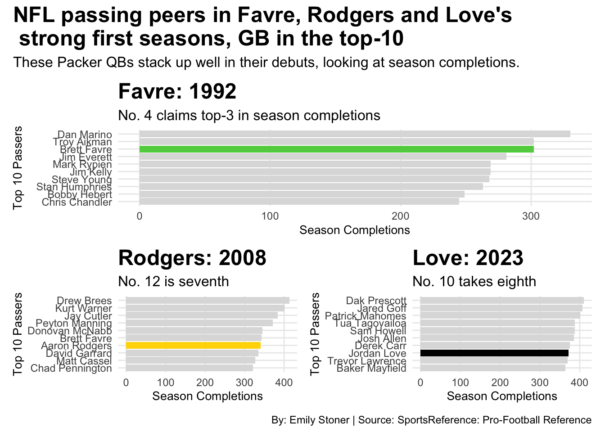
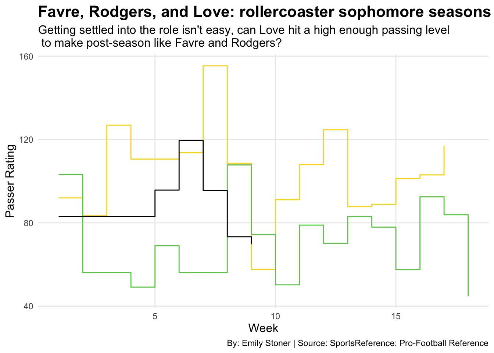

Code
library(tidyverse)
library(ggplot2)
library(ggrepel)
library(patchwork)
library(gt)Emily Stoner
November 17, 2024
After Jordan Love’s second full season as the starting quarterback for the Green Bay Packers, fans and stat lovers started to see some patterns and crazy coincidences in the numbers being put up by No. 10 and the last franchise quarterback, Aaron Rodgers.
Rodgers left the Packers for the Jets in 2022, 14 years after Brett Favre did the same. Both Rodgers and Favre then struggled with injury in their first seasons with New York, and the Jets didn’t make the playoffs, neither did the Packers with their new quarterback.
On X, @ShowTymeZach saw the pattern:
“Let’s look at Brett Favre’s and Aaron Rodgers stats in their first full season compared to Jordan Love’s this season:
| Player | Games Played | Attempts vs Complete | PassYds | Passing TDs | Interceptions | Passer Rating |
|---|---|---|---|---|---|---|
| Brett Favre | 16 | 318-522 | 3303 | 19 | 24 | 72.2 |
| Aaron Rodgers | 16 | 341-536 | 4038 | 28 | 13 | 93.8 |
| Jordan Love | 15 | 321-514 | 3587 | 27 | 11 | 91.8 |
One less start, and yet Love still has comparable stats to first year starts of 2 hall of fame careers.”
Zach wasn’t the only one. However, in the big picture, how many quarterbacks share similar stat lines? As much as I loved the idea of these Packer quarterbacks being magically connected in stats, and maybe results, I knew I needed to dig deeper too see if there really was a pattern here.
I started by taking the first starting season of each quarterback in question, and looking at their passing efficiency.
For reference, Favre will be represented with green, Rodgers with gold, and Love with black. The reference lines display the league average for the respective season.
ggplot() +
geom_point(data=F1, aes(x=P_CmpP, y=P_Rate, size=P_TD), color=203731, alpha = .6) +
geom_point(data=R1, aes(x=P_CmpP, y=P_Rate, size=P_TD), color="gold", alpha = .6) +
geom_point(data=L1, aes(x=P_CmpP, y=P_Rate, size=P_TD), alpha = .6) + theme_minimal() +
scale_x_continuous(breaks = c(35, 45, 55, 65, 75, 85, 95), limits = c(30, 100)) +
labs(
x = "Pass Completion Percentage", y = "Passer Rating",
title = "Green Bay's past three QBs: setting the bar in first year passing",
subtitle = "The Packers' franchise QBs passing game by game shows that as competition \n improves, so do they.",
caption = "By: Emily Stoner | Source: SportsReference: Pro-Football Reference"
) + geom_vline(xintercept = 58.5, color=203731) +
geom_hline(yintercept = 80, color=203731) +
geom_vline(xintercept = 61.3, color="gold") +
geom_hline(yintercept = 86, color="gold") +
geom_vline(xintercept = 65.1, color="black") +
geom_hline(yintercept = 92.2, color="black") +
scale_size(name="Passing TDs") +
theme(
plot.title = element_text(size = 12, face = "bold"))So what that tells me is that a) the standard for quarterbacks and passing game has increased over the years. Not only have the averages risen, but the performance of each quarterback has been more efficient in their first year. b) It also tells me that Rodgers and Love show a bit more similarity in passing game than either does with Favre.
Taking another step back, for another “big picture” check, I want to look at how each of these quarterbacks compare to their peers in their first season. We’ll look at this through completions, and the top 10 passers of 1992, 2008 and 2023.
barFavre92 <- ggplot() +
geom_bar(
data = Pass92 |> slice_max(Cmp, n = 10),
aes(x = reorder(Player, Cmp), weight = Cmp),
position = "identity",
fill = "#DDDDDD"
) +
geom_bar(
data = Pass92 |> filter(Player == "Brett Favre"),
aes(x = reorder(Player, Cmp), weight = Cmp),
fill = 203731,
position = "identity"
) +
coord_flip() +
labs(
title = "Favre: 1992",
x = "Top 10 Passers",
y = "Season Completions",
subtitle = "No. 4 claims top-3 in season completions"
) +
theme_minimal() +
theme(
panel.grid.minor = element_blank()
)barRodgers08 <- ggplot() +
geom_bar(
data = Pass08 |> slice_max(Cmp, n = 10),
aes(x = reorder(Player, Cmp), weight = Cmp),
position = "identity",
fill = "#DDDDDD"
) +
geom_bar(
data = Pass08 |> filter(Player == "Aaron Rodgers"),
aes(x = reorder(Player, Cmp), weight = Cmp),
fill = "gold",
position = "identity"
) +
coord_flip() +
labs(
title = "Rodgers: 2008",
x = "Top 10 Passers",
y = "Season Completions",
subtitle = "No. 12 is seventh"
) +
theme_minimal() +
theme(
panel.grid.minor = element_blank()
)barLove23 <- ggplot() +
geom_bar(
data = Pass23 |> slice_max(Cmp, n = 10),
aes(x = reorder(Player, Cmp), weight = Cmp),
position = "identity",
fill = "#DDDDDD"
) +
geom_bar(
data = Pass23 |> filter(Player == "Jordan Love"),
aes(x = reorder(Player, Cmp), weight = Cmp),
fill = "black",
position = "identity"
) +
coord_flip() +
labs(
title = "Love: 2023",
x = "Top 10 Passers",
y = "Season Completions",
subtitle = "No. 10 takes eighth"
) +
theme_minimal() +
theme(
panel.grid.minor = element_blank()
)barFavre92 / (barRodgers08 | barLove23) +
plot_annotation(
title = "NFL Passers in Favre, Rodgers and Love's \n 'Top 10' first seasons",
subtitle = "These Packer QBs stack up well in their debuts, looking at season completions.",
caption = "By: Emily Stoner | Source: SportsReference: Pro-Football Reference"
) &
theme(
plot.title = element_text(size = 18, face = "bold"),
axis.title = element_text(size = 12),
plot.subtitle = element_text(size = 12),
panel.grid.minor = element_blank()
)
In their starting job debut seasons, each Packer quarterback was among one other QB1 in year one. For Favre, Stan Humphries, who sat in eighth. For Rodgers, Matt Cassel, who sat in ninth. And for Love, Sam Howell who finished the season fifth.
Again, Love and Rodgers showing some similarities, and their peers aren’t necessarily doing the same thing. Green Bay’s young starting quarterbacks make a mark in their first year on the field. Among veterans, superbowl winners and app-pro selections, the Packers seem to have the passing position figured out.
Although it may not be technique, or that there’s something in the water in Green Bay, there are certainly notable similarities between these franchise quarterbacks in Wisconsin. Among their peers, and among each other, Favre, Rodgers and Love have shown more similar than different.
If they’ve proven similar in the past, what about the future? Favre and Rodgers led decorated storied careers, but will Love do the same? Love has almost two seasons under his belt. Let’s look at what his game might look like in coming years if he continues to perform like his predecessors.
ggplot() +
geom_step(
data = R2,
aes(x = Week, y = P_Rate),
color = "gold"
) +
geom_step(
data = F2,
aes(x = Week, y = P_Rate),
color = 203731
) +
geom_step(
data = L2,
aes(x = Week, y = P_Rate),
color = "black"
) + theme_minimal() +
labs(
title = "Favre, Rodgers, and Love: rollercoaster sophomore seasons",
x = "Passer Rating",
y = "Week",
subtitle = "Getting settled into the role isn't easy, can Love hit a high enough passing level \n to make post-season like Favre and Rodgers?", caption = "By: Emily Stoner | Source: SportsReference: Pro-Football Reference"
) +
theme(
plot.title = element_text(size = 16, face = "bold"),
axis.title = element_text(size = 12),
plot.subtitle = element_text(size = 12),
panel.grid.minor = element_blank()
)
Favre and Rodgers both took the Packers to the playoffs as a wildcard in their second years as the starter, despite their rocky ratings. However, a quarterback is just one man on the field. Opponents, defense and injury also impact these turnouts. Let’s take an even bigger step back and look where Love might be headed, if this is more than a coincidence.